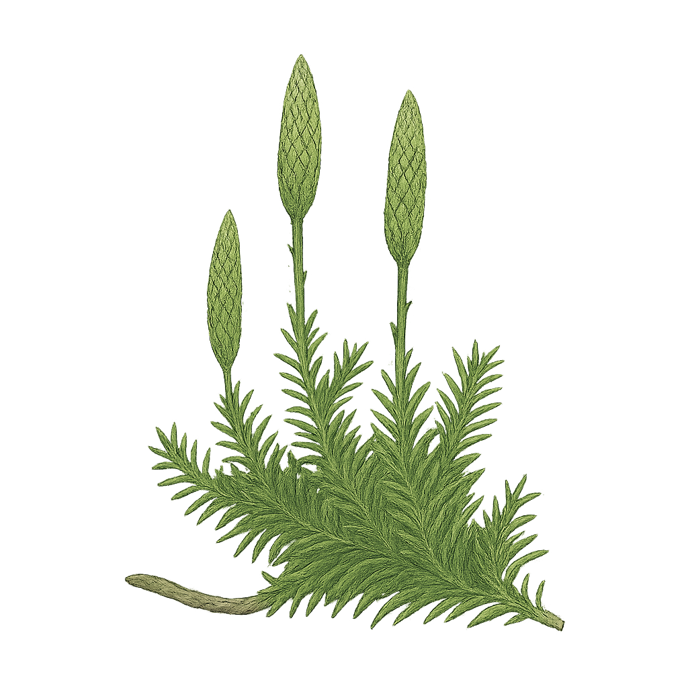

Lycopodiaceae
Clubmoss Family / Ground Pine Family
Lycopodiaceae, the clubmoss family, is an ancient lineage of vascular plants belonging to the Lycophytes (Phylum Lycopodiophyta). This family includes about 3-10 genera (depending on classification) and roughly 400 species of perennial, typically evergreen herbs. Often resembling large mosses or small conifer seedlings, they are characterized by dichotomously branching stems densely covered in small, simple leaves (microphylls), the absence of ligules, and reproduction via spores produced in kidney-shaped sporangia, which are often clustered into terminal cones (strobili). Unlike the related Selaginellaceae and Isoetaceae, Lycopodiaceae are homosporous, producing only one type of spore.
Overview
Clubmosses represent one of the oldest lineages of living vascular plants, with fossil relatives dating back nearly 400 million years. They are found globally, inhabiting diverse terrestrial environments from tropical forests to arctic tundra, often favoring moist woodlands, bogs, or montane habitats. Their growth forms vary from creeping, mat-forming species to erect, bushy plants. The common name "clubmoss" refers to the club-like shape of the terminal strobili found in many Lycopodium species. Genera lacking distinct cones are sometimes called firmosses (Huperzia).
Historically, the flammable spores of Lycopodium were collected as lycopodium powder, used for flash effects in early photography and theater, and as a coating for pills. Today, their primary importance is ecological, as components of various ecosystems, and scientific, representing an ancient evolutionary branch distinct from ferns and seed plants. Some species are occasionally cultivated as ornamentals, particularly epiphytic tassel ferns (Phlegmariurus, often included in Huperzia). Taxonomic concepts within the family, especially generic limits (Lycopodium, Huperzia, Diphasiastrum, Lycopodiella), vary among botanists.
Quick Facts
- Scientific Name: Lycopodiaceae P. Beauv. ex Mirb.
- Common Name: Clubmoss family, Ground Pine family
- Number of Genera: Approximately 3-10+
- Number of Species: Approximately 400-450
- Distribution: Cosmopolitan.
- Evolutionary Group: Vascular Plants - Lycophytes (Phylum Lycopodiophyta)
- Order: Lycopodiales
Key Characteristics (Lycophyte Features)
Sporophyte (Dominant Plant)
- Habit: Perennial herbs, typically evergreen (except Phylloglossum), terrestrial, epilithic (on rock), or epiphytic (on other plants).
- Stems: Branching is typically dichotomous (forking into two equal branches), though sometimes appearing pseudo-monopodial (one branch dominant). Stems can be erect, creeping horizontally (often rhizomatous or stoloniferous), scrambling, or pendent (hanging). Possess true vascular tissue (protostele or modified forms).
- Leaves (Microphylls): Small (typically < 1 cm), simple, scale-like or needle-like, with a single, unbranched vein. Usually densely arranged spirally around the stem, sometimes appearing whorled or opposite/decussate. Leaves are typically uniform (isophyllous), but can be dimorphic in some genera (Diphasiastrum). Crucially, leaves lack ligules (small flaps present in Selaginellaceae and Isoetaceae).
- Roots: True roots, often arising from the underside of creeping stems or migrating down through stem tissue to emerge at the base.
Reproductive Structures (Sporophyte)
- Sporangia: Kidney-shaped (reniform) to nearly globose, relatively large, thick-walled (eusporangiate development pattern, though technically debated). Borne singly in the axil or on the adaxial (upper) surface of a leaf, either a typical vegetative leaf or a modified spore-bearing leaf (sporophyll).
- Strobili (Cones): In many genera (Lycopodium, Diphasiastrum, Lycopodiella), sporophylls are distinctly different from vegetative leaves and aggregated into compact, terminal structures called strobili or cones, which may be sessile or borne on distinct stalks (peduncles). In other genera (Huperzia), sporophylls are similar to vegetative leaves, and sporangia are borne in zones along the stem, not forming distinct strobili.
- Homospory: A defining feature. All sporangia produce only one type of spore; spores are morphologically indistinguishable and develop into potentially bisexual gametophytes.
- Spores: Trilete (tetrahedral with three-pronged scar), usually yellowish, thick-walled, produced in large numbers per sporangium.
- Gemmae: Some genera (Huperzia) produce specialized vegetative propagules called gemmae (modified bulbils or branchlets) for asexual reproduction.
Gametophyte Generation (Reduced Stage)
Gametophytes are small, free-living, and develop independently from the spore. Their morphology and ecology vary significantly:
- Some are subterranean, non-photosynthetic, tuberous structures that rely entirely on symbiotic fungi (mycoheterotrophic) for nutrition and may take years to mature (e.g., Lycopodium, Diphasiastrum).
- Others are surface-living, green, photosynthetic structures, often irregularly shaped or lobed (e.g., Huperzia, Lycopodiella).
- Gametophytes bear both antheridia (producing biflagellate sperm) and archegonia (producing eggs). Fertilization requires water.
Field Identification
Distinguishing Lycopodiaceae from other simple vascular plants and bryophytes involves looking for the combination of microphylls, branching pattern, spore structures, and lack of ligules.
Primary Identification Features
- Lycophyte Habit: Evergreen herbaceous plant with true stems, roots, and small leaves (microphylls).
- Microphylls: Leaves small, simple, scale-like or needle-like, with a single vein, usually densely covering the stem, typically arranged spirally or appearing whorled/opposite.
- No Ligules: Microphylls lack the small adaxial flap found in Selaginella and Isoetes.
- Homosporous: Produces only one type of spore (not easily seen in field, but implies absence of distinct mega/microsporangia).
- Sporangia Location: Kidney-shaped sporangia located in leaf axils or on upper leaf surface, either along the stem (Huperzia) or aggregated into terminal strobili (Lycopodium, Diphasiastrum).
- Dichotomous Branching (Often): Stems frequently fork into two equal branches.
Secondary Identification Features
- Strobilus Presence/Shape: Terminal cones present vs. absent. Strobili sessile vs. stalked; cylindrical vs. flattened.
- Growth Habit: Creeping horizontal stems with erect branches vs. tufted/erect vs. pendent epiphytic.
- Leaf Arrangement/Shape Details: Specific arrangement (spiral, whorled, ranked), shape, presence of hair-tips.
- Gemmae: Presence of specialized vegetative buds (Huperzia).
- Habitat: Woodland floor, bog, rock crevices, epiphytic.
Seasonal Identification Tips
- Year-round: Most species are evergreen, allowing identification based on vegetative features throughout the year.
- Late Summer/Fall: Strobili (if present) mature and release spores.
Common Confusion Points
- Selaginellaceae (Selaginella - Spikemosses): Also lycophytes with microphylls and often strobili. Key differences: Possess ligules (need lens!); heterosporous (two spore sizes). Leaves often dimorphic and 4-ranked.
- Isoetaceae (Isoetes - Quillworts): Also lycophytes with ligules and heterospory. Key differences: Aquatic or semi-aquatic habit; leaves long, quill-like, arising from a corm-like base; sporangia embedded in swollen leaf bases.
- Bryophyta (Mosses): Non-vascular. Lack true roots and vascular tissue. Leaves (phyllids) usually lack true single vein (except costa); different reproductive structures (capsule on seta, often with peristome).
- Small Seedlings of Conifers: May resemble some clubmosses (Huperzia), but are woody seedlings with different anatomy and will eventually develop characteristic conifer features.
- Some Ericaceae (e.g., Lycopodium look-alikes): Some heath family members have small, crowded, needle-like leaves but are flowering plants (dicots) with different anatomy and reproductive structures.
Focus on: Microphylls + No Ligules + Homospory + Kidney-shaped Sporangia (often in strobili) + Dichotomous Branching.
Field Guide Quick Reference
Look For:
- Herbaceous, vascular, often evergreen
- Stems dichotomously branched (often)
- Leaves small, simple microphylls (1 vein)
- Leaves usually spiral/dense, NO Ligule
- Homosporous (1 spore type)
- Sporangia kidney-shaped, axillary or in terminal Strobili
Key Variations:
- Strobili present vs. absent
- Growth habit (creeping, erect, pendent)
- Leaf shape/arrangement details
- Presence of gemmae (Huperzia)
- Genus concepts vary (Lycopodium vs. Huperzia vs. Diphasiastrum, etc.)
Notable Examples
Clubmosses represent an ancient group with diverse forms, often placed in different genera depending on the classification followed.

Lycopodium clavatum
Common Clubmoss / Stag's-horn Clubmoss
Widespread species with long, creeping horizontal stems producing erect, branched shoots. Leaves small, needle-like with fine hair-tips. Distinctive feature is the presence of long-stalked, typically paired or clustered cylindrical strobili borne on the erect shoots.

Huperzia lucidula
Shining Firmoss
Common in moist forests of eastern North America. Stems erect or ascending, forming clumps, dichotomously branched. Leaves relatively broad (oblanceolate), glossy green, often toothed near tip, appearing somewhat whorled. Lacks distinct strobili; sporangia borne in axils of upper leaves. Often produces characteristic flattened gemmae for vegetative reproduction. (Sometimes genus Huperzia is split into its own family Huperziaceae).

Diphasiastrum complanatum
Groundcedar / Northern Running-pine
Forms colonies with long, creeping subterranean rhizomes producing erect, highly branched shoots that are distinctly flattened, resembling miniature cedar branches. Leaves are small, scale-like, often dimorphic and arranged in 4 ranks. Produces stalked strobili, often several per fertile branch.

Lycopodiella inundata
Inundated Clubmoss / Marsh Clubmoss
Found in wet, acidic habitats like bogs, marshes, and sandy shores. Features short, creeping stems rooting along their length, producing short, erect fertile branches bearing solitary, sessile strobili. Vegetative leaves curve upwards.
Phylogeny and Classification
Lycopodiaceae is the sole family in the order Lycopodiales, one of the three extant orders within the phylum Lycopodiophyta (lycophytes). Lycophytes represent the earliest diverging lineage of living vascular plants, sister group to the Euphyllophytes (ferns + seed plants). Lycopodiales are distinguished from the other lycophyte orders (Selaginellales and Isoetales) by their lack of ligules and by being homosporous.
The family has an ancient fossil record, indicating its divergence from other lycophyte lineages by the Devonian period. While modern species are small herbs, extinct relatives in the broader lycophyte clade included massive trees that dominated Carboniferous swamp forests (e.g., Lepidodendron). The classification within Lycopodiaceae is debated, particularly the splitting of the traditional large genus Lycopodium into multiple genera like Huperzia, Lycopodiella, Diphasiastrum, Phlegmariurus, etc., sometimes even placed in separate families (e.g., Huperziaceae). Modern molecular studies generally support recognizing several distinct generic lineages.
Position in Plant Phylogeny
- Kingdom: Plantae
- Clade: Embryophytes (Land Plants)
- Clade: Tracheophytes (Vascular Plants)
- Phylum: Lycopodiophyta (Lycophytes)
- Class: Lycopodiopsida
- Order: Lycopodiales
- Family: Lycopodiaceae
Evolutionary Significance
Lycopodiaceae is crucial for understanding early land plant evolution:
- Ancient Vascular Lineage: Represents the oldest surviving group of vascular plants, showcasing features like microphylls and protosteles considered ancestral for tracheophytes.
- Homospory: Retains the ancestral condition of producing only one type of spore, contrasting with the heterospory evolved independently in Selaginellales/Isoetales and seed plants.
- Life Cycle: Exhibits the typical free-sporing vascular plant life cycle with independent gametophyte and dominant sporophyte generations.
- Morphological Stasis?: While diverse, the basic body plan has remained relatively conserved compared to the dramatic evolution seen in ferns and seed plants, making them valuable "living fossils" for comparison with ancient forms.